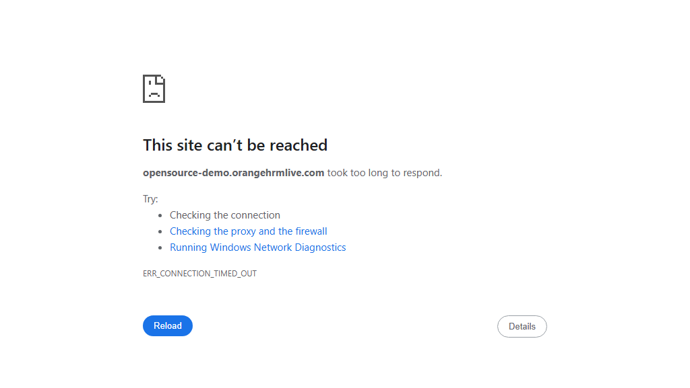

-
sampleTest_user1_18-40-08
6:40:09 PM / 00:00:21:471 Fail
sampleTest_user1_18-40-08
08.08.2026 6:40:09 PM 08.08.2026 6:40:30 PM 00:00:21:471 · #test-id=1Status Timestamp Details Skip 6:40:30 PM Test Skipped Fail 6:40:30 PM Info 6:40:30 PM 📂 Logs: Info 6:40:30 PM 📄 sampleTest_user1_18-40-08.log -
sampleTest2_user1_18-40-08
6:40:09 PM / 00:00:21:420 Fail
sampleTest2_user1_18-40-08
08.08.2026 6:40:09 PM 08.08.2026 6:40:30 PM 00:00:21:420 · #test-id=2Status Timestamp Details Skip 6:40:30 PM Test Skipped Fail 6:40:30 PM -
sampleTest3_user1_18-40-08
6:40:09 PM / 00:00:21:413 Fail
sampleTest3_user1_18-40-08
08.08.2026 6:40:09 PM 08.08.2026 6:40:30 PM 00:00:21:413 · #test-id=3Status Timestamp Details Skip 6:40:30 PM Test Skipped Fail 6:40:30 PM -
sampleTest1_user1_18-40-08
6:40:09 PM / 00:00:21:418 Fail
sampleTest1_user1_18-40-08
08.08.2026 6:40:09 PM 08.08.2026 6:40:30 PM 00:00:21:418 · #test-id=4Status Timestamp Details Skip 6:40:30 PM Test Skipped Fail 6:40:30 PM Info 6:40:30 PM 📂 Logs: Info 6:40:30 PM 📄 sampleTest1_user1_18-40-08.log -
sampleTest2_user1_18-40-34
6:40:34 PM / 00:00:45:471 Fail
sampleTest2_user1_18-40-34
08.08.2026 6:40:34 PM 08.08.2026 6:41:19 PM 00:00:45:471 · #test-id=5Status Timestamp Details Skip 6:41:19 PM Test Skipped Fail 6:41:19 PM -
sampleTest1_user1_18-40-34
6:40:34 PM / 00:00:43:702 Fail
sampleTest1_user1_18-40-34
08.08.2026 6:40:34 PM 08.08.2026 6:41:18 PM 00:00:43:702 · #test-id=6Status Timestamp Details Skip 6:41:18 PM Test Skipped Fail 6:41:18 PM Info 6:41:18 PM 📂 Logs: Info 6:41:18 PM 📄 sampleTest1_user1_18-40-34.log -
sampleTest3_user1_18-40-34
6:40:34 PM / 00:00:43:355 Fail
sampleTest3_user1_18-40-34
08.08.2026 6:40:34 PM 08.08.2026 6:41:18 PM 00:00:43:355 · #test-id=7Status Timestamp Details Skip 6:41:18 PM Test Skipped Fail 6:41:18 PM -
sampleTest_user1_18-40-34
6:40:34 PM / 00:00:44:983 Fail
sampleTest_user1_18-40-34
08.08.2026 6:40:34 PM 08.08.2026 6:41:19 PM 00:00:44:983 · #test-id=8Status Timestamp Details Skip 6:41:19 PM Test Skipped Fail 6:41:19 PM Info 6:41:19 PM 📂 Logs: Info 6:41:19 PM 📄 sampleTest_user1_18-40-34.log -
sampleTest3_user1_18-41-19
6:41:19 PM / 00:00:42:331 Fail
sampleTest3_user1_18-41-19
08.08.2026 6:41:19 PM 08.08.2026 6:42:02 PM 00:00:42:331 · #test-id=9Status Timestamp Details Fail 6:42:02 PM -
sampleTest1_user1_18-41-20
6:41:20 PM / 00:00:43:206 Fail
sampleTest1_user1_18-41-20
08.08.2026 6:41:20 PM 08.08.2026 6:42:03 PM 00:00:43:206 · #test-id=10Status Timestamp Details Fail 6:42:03 PM Info 6:42:03 PM 📂 Logs: Info 6:42:03 PM 📄 sampleTest1_user1_18-41-20.log -
sampleTest_user1_18-41-21
6:41:21 PM / 00:00:23:412 Fail
sampleTest_user1_18-41-21
08.08.2026 6:41:21 PM 08.08.2026 6:41:45 PM 00:00:23:412 · #test-id=11Status Timestamp Details Fail 6:41:45 PM Info 6:41:45 PM 📂 Logs: Info 6:41:45 PM 📄 sampleTest_user1_18-41-21.log -
sampleTest2_user1_18-41-22
6:41:22 PM / 00:00:22:931 Fail
sampleTest2_user1_18-41-22
08.08.2026 6:41:22 PM 08.08.2026 6:41:45 PM 00:00:22:931 · #test-id=12Status Timestamp Details Fail 6:41:45 PM -
sampleTest2_user2_18-41-46
6:41:46 PM / 00:00:23:197 Fail
sampleTest2_user2_18-41-46
08.08.2026 6:41:46 PM 08.08.2026 6:42:09 PM 00:00:23:197 · #test-id=13Status Timestamp Details Skip 6:42:09 PM Test Skipped Fail 6:42:09 PM -
sampleTest_user2_18-41-47
6:41:47 PM / 00:00:22:715 Fail
sampleTest_user2_18-41-47
08.08.2026 6:41:47 PM 08.08.2026 6:42:09 PM 00:00:22:715 · #test-id=14Status Timestamp Details Skip 6:42:09 PM Test Skipped Fail 6:42:09 PM Info 6:42:09 PM 📂 Logs: Info 6:42:09 PM 📄 sampleTest_user2_18-41-47.log -
sampleTest3_user2_18-42-03
6:42:03 PM / 00:00:22:125 Fail
sampleTest3_user2_18-42-03
08.08.2026 6:42:03 PM 08.08.2026 6:42:25 PM 00:00:22:125 · #test-id=15Status Timestamp Details Skip 6:42:25 PM Test Skipped Fail 6:42:25 PM -
sampleTest1_user2_18-42-04
6:42:04 PM / 00:00:22:122 Fail
sampleTest1_user2_18-42-04
08.08.2026 6:42:04 PM 08.08.2026 6:42:26 PM 00:00:22:122 · #test-id=16Status Timestamp Details Skip 6:42:26 PM Test Skipped Fail 6:42:26 PM Info 6:42:26 PM 📂 Logs: Info 6:42:26 PM 📄 sampleTest1_user2_18-42-04.log -
sampleTest2_user2_18-42-11
6:42:11 PM / 00:00:43:587 Fail
sampleTest2_user2_18-42-11
08.08.2026 6:42:11 PM 08.08.2026 6:42:54 PM 00:00:43:587 · #test-id=17Status Timestamp Details Skip 6:42:54 PM Test Skipped Fail 6:42:54 PM -
sampleTest_user2_18-42-11
6:42:11 PM / 00:00:43:679 Fail
sampleTest_user2_18-42-11
08.08.2026 6:42:11 PM 08.08.2026 6:42:55 PM 00:00:43:679 · #test-id=18Status Timestamp Details Skip 6:42:55 PM Test Skipped Fail 6:42:55 PM Info 6:42:55 PM 📂 Logs: Info 6:42:55 PM 📄 sampleTest_user2_18-42-11.log -
sampleTest3_user2_18-42-26
6:42:26 PM / 00:00:42:973 Fail
sampleTest3_user2_18-42-26
08.08.2026 6:42:26 PM 08.08.2026 6:43:09 PM 00:00:42:973 · #test-id=19Status Timestamp Details Skip 6:43:09 PM Test Skipped Fail 6:43:09 PM -
sampleTest1_user2_18-42-28
6:42:28 PM / 00:00:21:686 Fail
sampleTest1_user2_18-42-28
08.08.2026 6:42:28 PM 08.08.2026 6:42:49 PM 00:00:21:686 · #test-id=20Status Timestamp Details Skip 6:42:49 PM Test Skipped Fail 6:42:49 PM Info 6:42:49 PM 📂 Logs: Info 6:42:49 PM 📄 sampleTest1_user2_18-42-28.log -
sampleTest1_user2_18-42-51
6:42:51 PM / 00:00:22:787 Fail
sampleTest1_user2_18-42-51
08.08.2026 6:42:51 PM 08.08.2026 6:43:14 PM 00:00:22:787 · #test-id=21Status Timestamp Details Fail 6:43:14 PM Info 6:43:14 PM 📂 Logs: Info 6:43:14 PM 📄 sampleTest1_user2_18-42-51.log -
sampleTest2_user2_18-42-56
6:42:56 PM / 00:00:42:786 Fail
sampleTest2_user2_18-42-56
08.08.2026 6:42:56 PM 08.08.2026 6:43:38 PM 00:00:42:786 · #test-id=22Status Timestamp Details Fail 6:43:38 PM -
sampleTest_user2_18-42-57
6:42:57 PM / 00:00:43:115 Fail
sampleTest_user2_18-42-57
08.08.2026 6:42:57 PM 08.08.2026 6:43:40 PM 00:00:43:115 · #test-id=23Status Timestamp Details Fail 6:43:40 PM Info 6:43:40 PM 📂 Logs: Info 6:43:40 PM 📄 sampleTest_user2_18-42-57.log -
sampleTest3_user2_18-43-13
6:43:13 PM / 00:00:42:224 Fail
sampleTest3_user2_18-43-13
08.08.2026 6:43:13 PM 08.08.2026 6:43:55 PM 00:00:42:224 · #test-id=24Status Timestamp Details Fail 6:43:55 PM -
sampleTest4_user1_18-43-19
6:43:19 PM / 00:00:47:249 Fail
sampleTest4_user1_18-43-19
08.08.2026 6:43:19 PM 08.08.2026 6:44:06 PM 00:00:47:249 · #test-id=25Status Timestamp Details Skip 6:44:06 PM Test Skipped Fail 6:44:06 PM -
sampleTest5_user1_18-43-39
6:43:39 PM / 00:00:21:962 Fail
sampleTest5_user1_18-43-39
08.08.2026 6:43:39 PM 08.08.2026 6:44:01 PM 00:00:21:962 · #test-id=26Status Timestamp Details Skip 6:44:01 PM Test Skipped Fail 6:44:01 PM -
verifyLoginTest_{COL1=ONE}_18-43-42
6:43:42 PM / 00:00:22:037 Fail
verifyLoginTest_{COL1=ONE}_18-43-42
08.08.2026 6:43:42 PM 08.08.2026 6:44:04 PM 00:00:22:037 · #test-id=27Status Timestamp Details Skip 6:44:04 PM Test Skipped Fail 6:44:04 PM Info 6:44:04 PM 📂 Logs: Info 6:44:04 PM 📄 verifyLoginTest_{COL1=ONE}_18-43-42.log Info 6:44:04 PM 📸 Screenshots: Info 6:44:04 PM 
-
verifyLoginTest1_user1_18-43-56
6:43:56 PM / 00:00:22:102 Fail
verifyLoginTest1_user1_18-43-56
08.08.2026 6:43:56 PM 08.08.2026 6:44:18 PM 00:00:22:102 · #test-id=28Status Timestamp Details Skip 6:44:18 PM Test Skipped Fail 6:44:18 PM -
sampleTest5_user1_18-44-03
6:44:03 PM / 00:00:42:870 Fail
sampleTest5_user1_18-44-03
08.08.2026 6:44:03 PM 08.08.2026 6:44:45 PM 00:00:42:870 · #test-id=29Status Timestamp Details Skip 6:44:45 PM Test Skipped Fail 6:44:45 PM -
verifyLoginTest_{COL1=ONE}_18-44-05
6:44:05 PM / 00:00:22:089 Fail
verifyLoginTest_{COL1=ONE}_18-44-05
08.08.2026 6:44:05 PM 08.08.2026 6:44:27 PM 00:00:22:089 · #test-id=30Status Timestamp Details Skip 6:44:27 PM Test Skipped Fail 6:44:27 PM Info 6:44:27 PM 📂 Logs: Info 6:44:27 PM 📄 verifyLoginTest_{COL1=ONE}_18-44-05.log Info 6:44:27 PM 📸 Screenshots: Info 6:44:27 PM 
-
sampleTest4_user1_18-44-08
6:44:08 PM / 00:00:42:834 Fail
sampleTest4_user1_18-44-08
08.08.2026 6:44:08 PM 08.08.2026 6:44:50 PM 00:00:42:834 · #test-id=31Status Timestamp Details Skip 6:44:50 PM Test Skipped Fail 6:44:50 PM -
verifyLoginTest1_user1_18-44-20
6:44:20 PM / 00:00:22:042 Fail
verifyLoginTest1_user1_18-44-20
08.08.2026 6:44:20 PM 08.08.2026 6:44:42 PM 00:00:22:042 · #test-id=32Status Timestamp Details Skip 6:44:42 PM Test Skipped Fail 6:44:42 PM -
verifyLoginTest_{COL1=ONE}_18-44-28
6:44:28 PM / 00:00:21:853 Fail
verifyLoginTest_{COL1=ONE}_18-44-28
08.08.2026 6:44:28 PM 08.08.2026 6:44:50 PM 00:00:21:853 · #test-id=33Status Timestamp Details Fail 6:44:50 PM Info 6:44:50 PM 📂 Logs: Info 6:44:50 PM 📄 verifyLoginTest_{COL1=ONE}_18-44-28.log Info 6:44:50 PM 📸 Screenshots: Info 6:44:50 PM 
-
verifyLoginTest1_user1_18-44-43
6:44:43 PM / 00:00:22:128 Fail
verifyLoginTest1_user1_18-44-43
08.08.2026 6:44:43 PM 08.08.2026 6:45:05 PM 00:00:22:128 · #test-id=34Status Timestamp Details Fail 6:45:05 PM -
sampleTest5_user1_18-44-46
6:44:46 PM / 00:00:21:892 Fail
sampleTest5_user1_18-44-46
08.08.2026 6:44:46 PM 08.08.2026 6:45:08 PM 00:00:21:892 · #test-id=35Status Timestamp Details Fail 6:45:08 PM -
verifyLoginTest_{COL1=ONEONE}_18-44-51
6:44:51 PM / 00:00:43:227 Fail
verifyLoginTest_{COL1=ONEONE}_18-44-51
08.08.2026 6:44:51 PM 08.08.2026 6:45:34 PM 00:00:43:227 · #test-id=36Status Timestamp Details Skip 6:45:34 PM Test Skipped Fail 6:45:34 PM Info 6:45:34 PM 📂 Logs: Info 6:45:34 PM 📄 verifyLoginTest_{COL1=ONEONE}_18-44-51.log Info 6:45:34 PM 📸 Screenshots: Info 6:45:34 PM 
-
sampleTest4_user1_18-44-53
6:44:53 PM / 00:00:42:994 Fail
sampleTest4_user1_18-44-53
08.08.2026 6:44:53 PM 08.08.2026 6:45:36 PM 00:00:42:994 · #test-id=37Status Timestamp Details Fail 6:45:36 PM -
verifyLoginTest1_user2_18-45-06
6:45:06 PM / 00:00:42:982 Fail
verifyLoginTest1_user2_18-45-06
08.08.2026 6:45:06 PM 08.08.2026 6:45:49 PM 00:00:42:982 · #test-id=38Status Timestamp Details Skip 6:45:49 PM Test Skipped Fail 6:45:49 PM -
sampleTest5_user2_18-45-10
6:45:10 PM / 00:00:43:027 Fail
sampleTest5_user2_18-45-10
08.08.2026 6:45:10 PM 08.08.2026 6:45:54 PM 00:00:43:027 · #test-id=39Status Timestamp Details Skip 6:45:54 PM Test Skipped Fail 6:45:54 PM -
verifyLoginTest_{COL1=ONEONE}_18-45-36
6:45:36 PM / 00:00:43:312 Fail
verifyLoginTest_{COL1=ONEONE}_18-45-36
08.08.2026 6:45:36 PM 08.08.2026 6:46:19 PM 00:00:43:312 · #test-id=40Status Timestamp Details Skip 6:46:19 PM Test Skipped Fail 6:46:19 PM Info 6:46:19 PM 📂 Logs: Info 6:46:19 PM 📄 verifyLoginTest_{COL1=ONEONE}_18-45-36.log Info 6:46:19 PM 📸 Screenshots: Info 6:46:19 PM 
-
sampleTest4_user2_18-45-37
6:45:37 PM / 00:00:22:086 Fail
sampleTest4_user2_18-45-37
08.08.2026 6:45:37 PM 08.08.2026 6:45:59 PM 00:00:22:086 · #test-id=41Status Timestamp Details Skip 6:45:59 PM Test Skipped Fail 6:45:59 PM -
verifyLoginTest1_user2_18-45-52
6:45:52 PM / 00:00:21:603 Fail
verifyLoginTest1_user2_18-45-52
08.08.2026 6:45:52 PM 08.08.2026 6:46:13 PM 00:00:21:603 · #test-id=42Status Timestamp Details Skip 6:46:13 PM Test Skipped Fail 6:46:13 PM -
sampleTest5_user2_18-45-55
6:45:55 PM / 00:00:21:883 Fail
sampleTest5_user2_18-45-55
08.08.2026 6:45:55 PM 08.08.2026 6:46:17 PM 00:00:21:883 · #test-id=43Status Timestamp Details Skip 6:46:17 PM Test Skipped Fail 6:46:17 PM -
sampleTest4_user2_18-46-01
6:46:01 PM / 00:00:23:266 Fail
sampleTest4_user2_18-46-01
08.08.2026 6:46:01 PM 08.08.2026 6:46:25 PM 00:00:23:266 · #test-id=44Status Timestamp Details Skip 6:46:25 PM Test Skipped Fail 6:46:25 PM -
verifyLoginTest1_user2_18-46-16
6:46:16 PM / 00:00:45:468 Fail
verifyLoginTest1_user2_18-46-16
08.08.2026 6:46:16 PM 08.08.2026 6:47:02 PM 00:00:45:468 · #test-id=45Status Timestamp Details Fail 6:47:02 PM -
verifyLoginTest_{COL1=ONEONE}_18-46-25
6:46:25 PM / 00:01:14:232 Fail
verifyLoginTest_{COL1=ONEONE}_18-46-25
08.08.2026 6:46:25 PM 08.08.2026 6:47:39 PM 00:01:14:232 · #test-id=46Status Timestamp Details Fail 6:47:39 PM Info 6:47:39 PM 📂 Logs: Info 6:47:39 PM 📄 verifyLoginTest_{COL1=ONEONE}_18-46-25.log Info 6:47:39 PM 📸 Screenshots: Info 6:47:39 PM 
-
sampleTest5_user2_18-46-25
6:46:25 PM / 00:00:44:990 Fail
sampleTest5_user2_18-46-25
08.08.2026 6:46:25 PM 08.08.2026 6:47:10 PM 00:00:44:990 · #test-id=47Status Timestamp Details Fail 6:47:10 PM -
sampleTest4_user2_18-46-28
6:46:28 PM / 00:00:24:475 Fail
sampleTest4_user2_18-46-28
08.08.2026 6:46:28 PM 08.08.2026 6:46:52 PM 00:00:24:475 · #test-id=48Status Timestamp Details Fail 6:46:52 PM -
verifyLoginTest2_user1_18-46-56
6:46:56 PM / 00:00:22:112 Fail
verifyLoginTest2_user1_18-46-56
08.08.2026 6:46:56 PM 08.08.2026 6:47:18 PM 00:00:22:112 · #test-id=49Status Timestamp Details Skip 6:47:18 PM Test Skipped Fail 6:47:18 PM -
verifyLoginTest2_user1_18-47-19
6:47:19 PM / 00:00:42:906 Fail
verifyLoginTest2_user1_18-47-19
08.08.2026 6:47:19 PM 08.08.2026 6:48:02 PM 00:00:42:906 · #test-id=50Status Timestamp Details Skip 6:48:02 PM Test Skipped Fail 6:48:02 PM -
verifyLoginTest2_user1_18-48-04
6:48:04 PM / 00:00:42:864 Fail
verifyLoginTest2_user1_18-48-04
08.08.2026 6:48:04 PM 08.08.2026 6:48:46 PM 00:00:42:864 · #test-id=51Status Timestamp Details Fail 6:48:46 PM -
verifyLoginTest2_user2_18-48-47
6:48:47 PM / 00:00:42:769 Fail
verifyLoginTest2_user2_18-48-47
08.08.2026 6:48:47 PM 08.08.2026 6:49:30 PM 00:00:42:769 · #test-id=52Status Timestamp Details Skip 6:49:30 PM Test Skipped Fail 6:49:30 PM -
verifyLoginTest2_user2_18-49-32
6:49:32 PM / 00:00:43:308 Fail
verifyLoginTest2_user2_18-49-32
08.08.2026 6:49:32 PM 08.08.2026 6:50:15 PM 00:00:43:308 · #test-id=53Status Timestamp Details Skip 6:50:15 PM Test Skipped Fail 6:50:15 PM -
verifyLoginTest2_user2_18-50-16
6:50:16 PM / 00:00:44:996 Fail
verifyLoginTest2_user2_18-50-16
08.08.2026 6:50:16 PM 08.08.2026 6:51:01 PM 00:00:44:996 · #test-id=54Status Timestamp Details Fail 6:51:01 PM
-
org.openqa.selenium.WebDriverException
54 tests
org.openqa.selenium.WebDriverException
54 failed
Started
Aug 8, 2026 06:39:26 PM
Ended
Aug 8, 2026 06:51:02 PM
Tests Passed
0
Tests Failed
54
Tests
Log events
Timeline